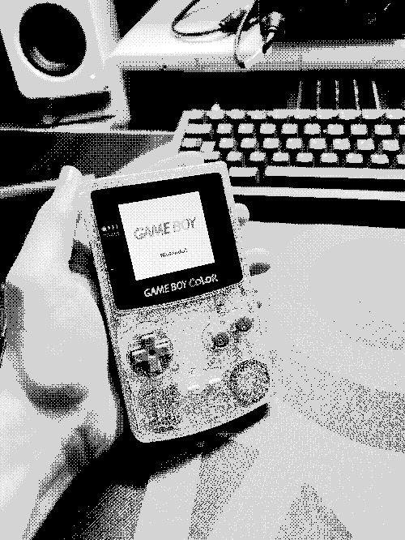
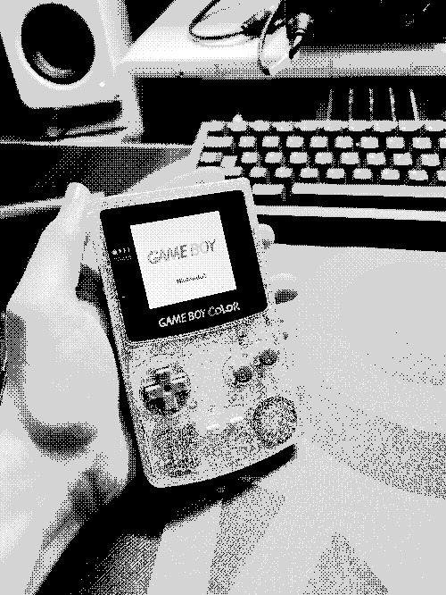

akin to that one flight i took that one time.
overwhelmingly exciting for what's ahead, but a bit of a rocky start.
reproducing "retro" consoles with fpgas at incredibly accessible prices is an amazing future that i hope to see.
i can't imagine the complexity associated with reverse engineering a console at all, though.
analogue has been doing this for years, but their business model has devolved to scarcity tactics,
their prices are insane (with reportedly absurd shipping prices)
and their marketing revolves around the idea that their products are "no emulation". my reach is limited, but let me communicate this clearly:
hardware emulation is emulation.
they even clarify that their products use no software emulation in the small print of their website - they're aware that this claim is unambiguously false.
hardware emulation does suffer from inaccuracy issues, the exact same way that software emulation does.
inaccurate (albeit infrequent) cycle speeds,
rtc,
write/read compatibility,
color reproduction, etc. - these all contribute to a less than
authentic experience, and the analogue pocket is no different.
and yet, it seems like all i hear about the analogue products is from people frothing at the mouth saying "but it's not emulation so it's better!!1!", and analogue directly
benefits from this misconception.
so, i'm not about to drop $220 (+$60 shipping!!!) on a product i don't need, to support a company whose business practices i believe are immoral, and whose marketing tactics so carefully dance
the line of deception that it's remarkable all they've been required to disclaim is in small print on their website.
so. the funnyplaying fpgbc.
imagine if the analogue pocket was maybe 10% worse at it's aimed goal, about 120% less expensive, and about 50% more fun.
at like $85 all in, with free shipping, it's not just one of the easiest diy kits for the gameboy family, but you also don't need to have a gameboy or gbc to mod.
this entire device is kind of sold as if it's just another mod kit for gbc, but no - it's entirely its own console.
that's not to say it's without it's issues.
the most glaring one is that it doesn't seem to work with most reliable flash carts, including krikzz's everdrive-gb, and the ez-flash junior (which is the one i have).
beyond that, there are a few options for the display, including 4x integer scaling and a non-integer scaled view that fills the whole screen, which obviously
will include shimmering, but honestly, i don't care about that. it looks amazing filling up the whole screen. so what's the problem? well, for each of the sizing options, there's a version that includes a color profile that attempts to emulate what a gameboy color looks like.
it's honestly not worth complaining about - just don't use it. turn it off, and don't turn it back on. it doesn't look good, i don't feel like it's particularly
accurate, and i await a day when a firmware update patches it properly.
i've had the fpgbc in my backpack with my copy of pokémon crystal since i put it together, and i've loved it. maybe my cartridge is borked, but the rtc doesn't work.
i haven't tried it with my actual gameboy color (see dec2023 entry), so while i cannot fathom why it would be an issue with the fpgbc, i still don't care to rule it out
as a possibility.
i do believe that the best game console is the one you have with you, the same way the best flashlight is the one you have with you, the best knife is the one you have with you, etc. etc.,
so it should come as no surprise that this has quickly become my more favorite game console recently, even with its flashcart shortcomings.
love this little thing.


 
